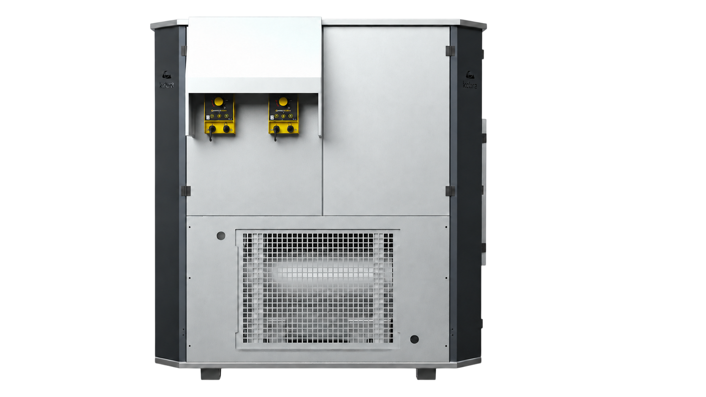
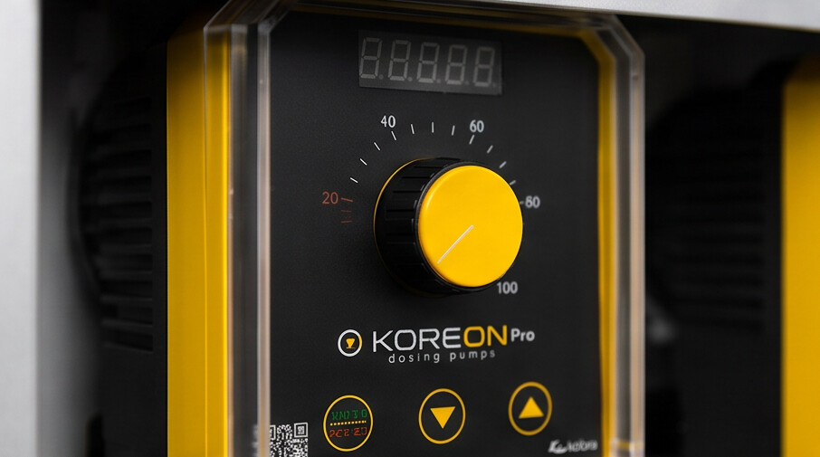
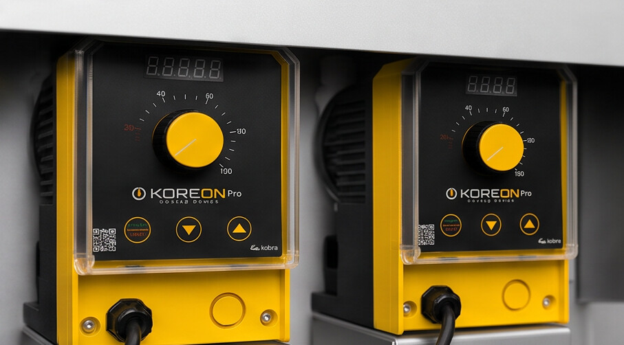

Os parâmetros que fazem
a diferença na produção.
Temperatura
A água resfriada favorece o consumo hídrico, auxilia na redução do estresse térmico e contribui para melhores condições de produção. A ORKA mantém a temperatura da água sob controle mesmo em ambientes de até 43 °C.

pH
O controle do pH favorece a aplicação de medicamentos e aditivos e ajuda a otimizar a ação de desinfetantes. Monitorado continuamente para garantir a eficácia do tratamento ao longo de toda a produção.

ORP
O acompanhamento do potencial de oxirredução permite avaliar a eficiência do processo de desinfecção da água. Um indicador preciso da capacidade sanitizante do sistema de tratamento.

Consumo
O monitoramento do consumo ajuda a manter uma distribuição homogênea e a disponibilidade contínua de água. Com 4.000 L/h de vazão de trabalho, a ORKA garante o abastecimento adequado de toda a instalação.
